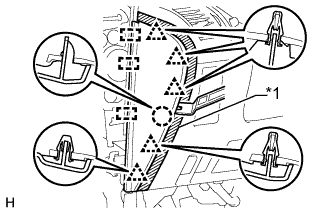
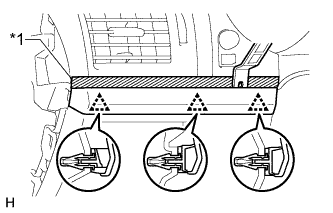
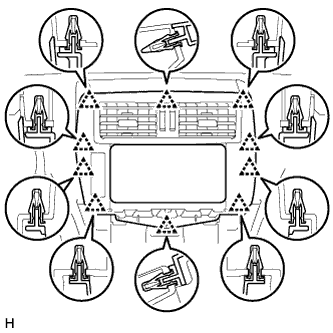
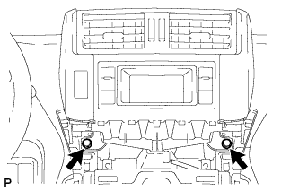
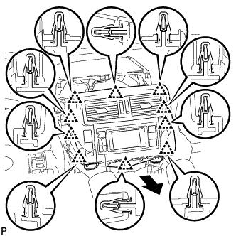

ЗУММЕР ПРЕДУПРЕЖДЕНИЯ О НЕДОПУСТИМОЙ ДИСТАНЦИИ > СНЯТИЕ |
| 1. ОТСОЕДИНИТЕ ПРОВОД ОТ ОТРИЦАТЕЛЬНОГО ВЫВОДА АККУМУЛЯТОРНОЙ БАТАРЕИ |
| 2. СНИМИТЕ ОПОРНУЮ НАКЛАДКУ ЛЕВОЙ ДВЕРИ (для моделей с левосторонним рулевым управлением) |
 |
Наклейте защитную ленту вокруг опорной накладки двери.
С помощью отвертки освободите 4 фиксатора, 10 захватов и 2 направляющих и снимите опорную накладку двери.
| *1 | Защитная клейкая лента |
| 3. СНИМИТЕ БОКОВУЮ ОБЛИЦОВОЧНУЮ НАКЛАДКУ С ЛЕВОЙ СТОРОНЫ КОЖУХА (для моделей с левосторонним рулевым управлением) |
 |
Снимите фиксатор.
Освободите фиксатор и захват и снимите боковую облицовочную накладку кожуха.
| 4. СНИМИТЕ ЛЕВУЮ БОКОВУЮ ПАНЕЛЬ ПРИБОРОВ (для моделей с левосторонним рулевым управлением) |
|  |
Наклейте защитную ленту вокруг боковой панели приборов.
| *1 | Защитная клейкая лента |
С помощью съемника молдингов отцепите 5 фиксаторов, захват и 3 направляющих и снимите боковую панель приборов.
| 5. СНИМИТЕ ДЕКОРАТИВНЫЙ ЭЛЕМЕНТ ОБЛИЦОВКИ ПАНЕЛИ УПРАВЛЕНИЯ (для моделей с левосторонним рулевым управлением) |
|  |
Наложите защитную ленту вокруг декоративного элемента отделочной накладки панели приборов.
| *1 | Защитная клейкая лента |
С помощью съемника молдингов освободите 3 фиксатора и снимите декоративный элемент отделочной накладки панели приборов.
| 6. СНИМИТЕ НИЖНЮЮ КРЫШКУ ПАНЕЛИ ПРИБОРОВ № 1 В СБОРЕ (для моделей с левосторонним рулевым управлением) |
| 7. СНИМИТЕ ОБЛИЦОВКУ ОТДЕЛОЧНОЙ НАКЛАДКИ ПАНЕЛИ ПРИБОРОВ (для моделей с правосторонним рулевым управлением) |
 |
Освободите 4 фиксатора.
Отсоедините все разъемы и снимите облицовку отделочной накладки панели приборов.
| 8. СНИМИТЕ ОПОРНУЮ НАКЛАДКУ ПРАВОЙ ДВЕРИ (для моделей с правосторонним рулевым управлением) |
 |
Наклейте защитную ленту вокруг опорной накладки двери.
С помощью отвертки освободите 4 фиксатора, 10 захватов и 2 направляющих и снимите опорную накладку двери.
| *1 | Защитная клейкая лента |
| 9. СНИМИТЕ БОКОВУЮ ОБЛИЦОВОЧНУЮ НАКЛАДКУ С ПРАВОЙ СТОРОНЫ КОЖУХА (для моделей с правосторонним рулевым управлением) |
Снимите фиксатор.
Освободите фиксатор и захват и снимите боковую облицовочную накладку кожуха.
| 10. СНИМИТЕ ПРАВУЮ БОКОВУЮ ПАНЕЛЬ ПРИБОРОВ (для моделей с правосторонним рулевым управлением) |
 |
Наклейте защитную ленту вокруг боковой панели приборов.
| *1 | Защитная клейкая лента |
С помощью съемника молдингов отцепите 5 фиксаторов, захват и 3 направляющих и снимите боковую панель приборов.
| 11. СНИМИТЕ НИЖНЮЮ КРЫШКУ ПАНЕЛИ ПРИБОРОВ №2 В СБОРЕ (для моделей с правосторонним рулевым управлением) |
Введите в зацепление 3 фиксатора и 2 направляющих, чтобы установить нижнюю крышку панели приборов № 2.
Вверните винт.

| *A | Для моделей с левосторонним рулевым управлением | *B | Для моделей с правосторонним рулевым управлением |
| 12. СНИМИТЕ НИЖНЮЮ ОТДЕЛОЧНУЮ НАКЛАДКУ ПАНЕЛИ ПРИБОРОВ В СБОРЕ |
Освободите 4 фиксатора.
Отсоедините все разъемы и снимите отделочную накладку панели приборов.
| 13. СНИМИТЕ НИЖНЮЮ ОТДЕЛОЧНУЮ НАКЛАДКУ ПАНЕЛИ ПРИБОРОВ В СБОРЕ |
 |
С помощью отвертки освободите 2 захвата и откройте крышку.
| *1 | Защитная клейкая лента |
Для моделей без подушки безопасности для защиты коленей:
Выверните 2 болта <C>.
Освободите 7 фиксаторов.
Отсоедините все разъемы и все кабели и снимите нижнюю отделочную накладку панели приборов.
Для моделей с подушкой безопасности для защиты коленей:
Выверните 2 болта <C>.
Освободите 14 фиксаторов.
Отсоедините все разъемы и все кабели и снимите нижнюю отделочную накладку панели приборов.
| 14. СНИМИТЕ ПОДУШКУ БЕЗОПАСНОСТИ № 1 ДЛЯ ЗАЩИТЫ НОГ В СБОРЕ |
 |
Выверните 4 болта и снимите подушку безопасности в сборе.
Отсоедините разъем.
| 15. СНИМИТЕ ИНТЕГРИРОВАННУЮ ПАНЕЛЬ УПРАВЛЕНИЯ В СБОРЕ |
 |
Освободите 4 фиксатора.
Отсоедините разъем и снимите интегрированную панель управления в сборе.
| 16. СНИМИТЕ ЦЕНТРАЛЬНУЮ ОТДЕЛОЧНУЮ НАКЛАДКУ ПАНЕЛИ ПРИБОРОВ В СБОРЕ (для моделей без дисплея) |
|  |
Освободите 10 фиксаторов.
Отсоедините разъем и снимите центральную отделочную накладку панели приборов.
| 17. СНИМИТЕ КРЫШКУ ОТВЕРСТИЯ РАДИОПРИЕМНИКА (для моделей без аудиосистемы) |
 |
Выверните 4 болта и снимите крышку отверстия радиоприемника.
| 18. СНИМИТЕ ДИСПЛЕЙ МОДУЛЯ СИСТЕМЫ НАВИГАЦИИ И ИНДИКАЦИИ (для моделей с дисплеем, с системой навигации) |
 |
Выверните 4 болта.
 |
Потяните дисплей модуля системы навигации и индикации, чтобы освободить 8 фиксаторов с обратной стороны дисплея.
Отсоедините разъемы и снимите дисплей модуля системы навигации и индикации.
| 19. СНИМИТЕ ВСПОМОГАТЕЛЬНЫЙ ИНДИКАТОР В СБОРЕ (для моделей с дисплеем, без системы навигации) |
|  |
Выверните 2 болта.
|  |
Вытяните вспомогательный индикатор, чтобы открепить 10 фиксаторов с обратной стороны вспомогательного индикатора.
Отсоедините разъемы и снимите вспомогательный индикатор.
| 20. СНИМИТЕ РАДИОПРИЕМНИК В СБОРЕ (для моделей с аудиосистемой) |
Верхняя сторона:
Снимите радиоприемник в сборе (Нажмите здесь).
Нижняя сторона:
Снимите радиоприемник в сборе (Нажмите здесь).
| 21. СНИМИТЕ ЗУММЕР ПРЕДУПРЕЖДЕНИЯ О НЕДОПУСТИМОЙ ДИСТАНЦИИ № 1 |
 |
Отсоедините разъем.
Отцепите зажим и снимите зуммер предупреждения о недопустимой дистанции № 1.